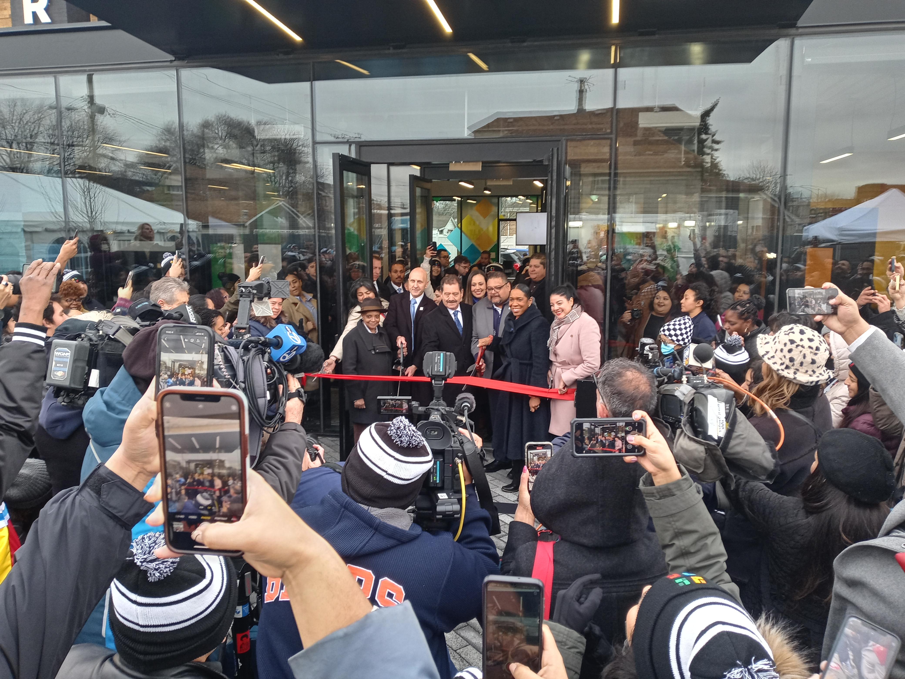

March 2, 2023
The Southwest Organizing Project (SWOP) works in many different facets of community engagement, all made possible through efforts with its 45 member institutions. One of those members is PODER who has been a pillar in the Southwest side of Chicago for 26 years. This story aims to highlight the work that PODER puts into the community to promote human dignity, increase employment potential, and facilitate participation in the larger community. PODER, being the Spanish word for power, strives to live up to their name by putting the power back into the hands of their community.
PODER was founded January 1997 in a rehabbed former boxing ring in Pilsen. Daniel Loftus, the founder and CEO of PODER, wanted to help parents in the community communicate with the teachers of their children and began with the idea of providing English classes to the parents. Although they started out as the Loyola center, this blossoming community pillar became PODER, learning center in January 2001. As PODER progressed, they noticed it was more than language acquisition people were looking for, so PODER developed their own workforce development program. PODER has enhanced its programs to serve as an immigrant integration center, with five levels of Integrated English and Workforce Development programs that include Customer Service training tied to an industry-recognized credential, Bilingual Insurance Licensing, and Latinos in Finance, as well as digital literacy and financial literacy.
During the pandemic, a lot of PODER’s community members were trying to figure out why so many issues were prevalent around them and PODER wanted to figure out a way to collaborate with their community and other nearby organizations. Along with several other organizations, PODER began working with SWOP through the Healthy Southwest Initiative with the goal of establishing regional strategies to address the issue areas of Health, Education, Employment/Workforce Development, Safety and Immigration.
In a recent development, SWOP has joined with PODER’s community hub to give digital literacy classes in both English and Spanish. These trainings allow community members to earn certifications for computer software and programs as well as expand their overall knowledge of technology.
When asked about the future of PODER’s work, Griselda Piedra, PODER’s Community Relations Manager, had this to say, “With the opening of our new space, our goal is to continue the work that we have already set into motion, but also bring the other organizations that we are partnered with into these spaces where we can collaborate and effectively offer all of these different resources to our community.” PODER places a strong emphasis on the needs of the community and this is only made possible through genuine connections and an understanding of community gaps and where they can fill needs.
In her final statements, Griselda reflected on the importance of having allies whose ideas and goals align with community engagement, community input and a drive to see the growth of generational wealth, knowledge and equity. “The only way our community is going to thrive is when we put them first. They need to be made a priority of all things that we do.”